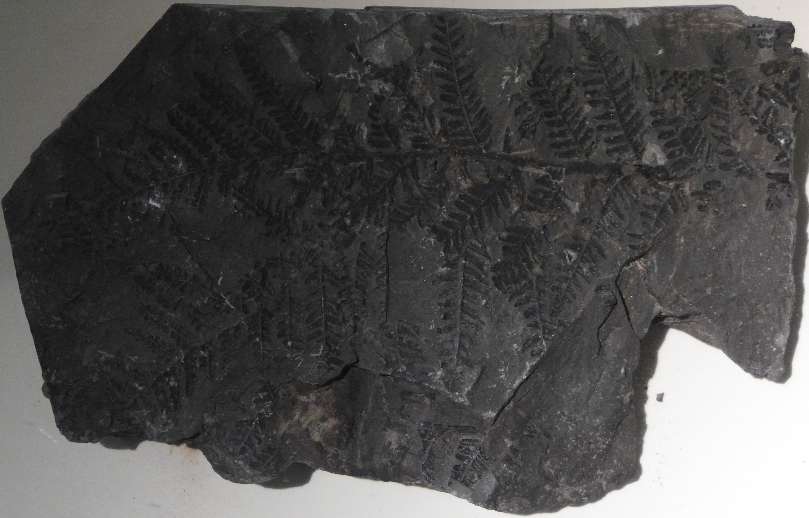

最早的森林
在三億五千萬年前和二億八千萬年前之間，濃密的熱帶森林分佈在亞洲、歐洲及北美洲的低窪沼澤區。 當時當地的氣候溫暖而潮濕，一些新種的植物快速地成長並且極為高大。昆蟲在其中飛翔、飛行。 蠍、蜈蚣及蜘蛛捕食昆蟲，植食性的馬陸在植株下潛行。這時期的有些古代之動物有巨大的體軀。
 現今的煤層是怎麼形成的呢？
現今的煤層是怎麼形成的呢？
森林中的葉子和樹幹在沼澤中經歷了數百萬年的堆積， 再加上壓力的作用，這些植物的殘留物便形成現今的煤層。 因煤之主要成份為炭，這個地質年代便被稱之為石炭紀。
下圖為石炭紀的植物化石
